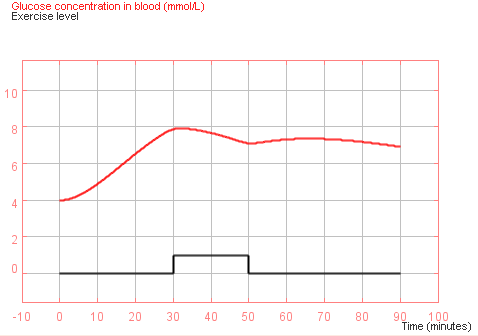

Now it is time to test your hypothesis. Performing a real experiment would involve a lot of test subjects and would take a lot of time. Instead you will test your hypothesis with a virtual model. This model simulates the effects of glucose intake on the blood glucose concentration (with or without exercise). After doing your experiment you will analyse the results and formulate an answer to your research question.
Learning goals
In this part of the mission you will learn:
